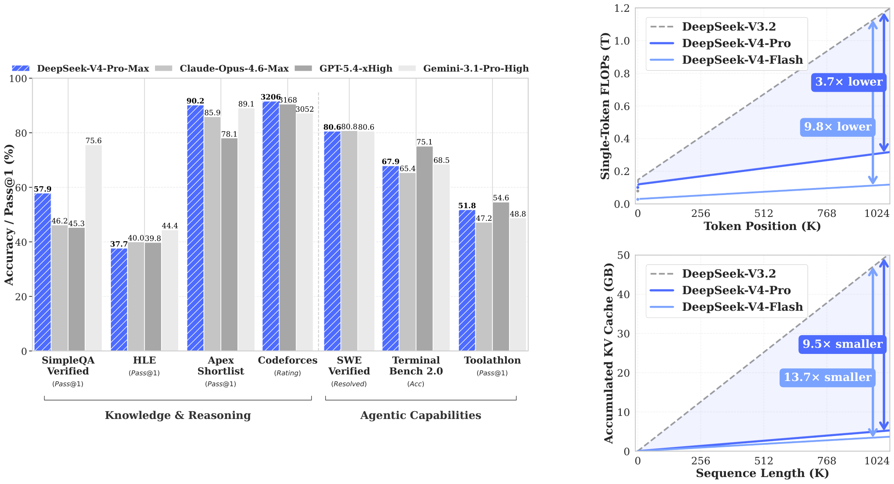

Evaluates the model's formal math proving as a Lean 4 agent with compiler access and LeanExplore tactic search, using up to 500 tool calls.
Abstract
We present a preview version of DeepSeek-V4 series, including two strong Mixture-of-Experts (MoE) language models – DeepSeek-V4-Pro with 1.6T parameters (49B activated) and DeepSeek-V4-Flash with 284B parameters (13B activated) – both supporting a context length of one million tokens. DeepSeek-V4 series incorporate several key upgrades in architecture and optimization: (1) a hybrid attention architecture that combines Compressed Sparse Attention (CSA) and Heavily Compressed Attention (HCA) to improve long-context efficiency; (2) Manifold-Constrained Hyper-Connections (mHC) that enhance conventional residual connections; (3) and the Muon optimizer for faster convergence and greater training stability. We pre-train both models on more than 32T diverse and high-quality tokens, followed by a comprehensive post-training pipeline that unlocks and further enhances their capabilities. DeepSeek-V4-Pro-Max, the maximum reasoning effort mode of DeepSeek-V4-Pro, redefines the state-of-the-art for open models, outperforming its predecessors in core tasks. Meanwhile, DeepSeek-V4 series are highly efficient in long-context scenarios. In the one-million-token context setting, DeepSeek-V4-Pro requires only 27% of single-token inference FLOPs and 10% of KV cache compared with DeepSeek-V3.2. This enables us to routinely support one-million-token contexts, thereby making long-horizon tasks and further test-time scaling more feasible. The model checkpoints are available at https://huggingface.co/collections/deepseek-ai/deepseek-v4.
Problem
Vanilla attention scales quadratically with sequence length, which limits test-time scaling and long-horizon tasks for LLMs. The goal is efficient native support for million-token contexts in open models.
Approach
DeepSeek-V4-Pro (1.6T parameters, 49B activated) and DeepSeek-V4-Flash (284B parameters, 13B activated) are MoE models. They use hybrid Compressed Sparse Attention and Heavily Compressed Attention, Manifold-Constrained Hyper-Connections, and the Muon optimizer. Both are pre-trained on more than 32T tokens and post-trained with specialist RL followed by on-policy distillation. Formal math ability is evaluated agentically in Lean v4.28.0-rc1, optionally guided by self-verified natural-language solutions.
Results
In the one-million-token setting, DeepSeek-V4-Pro needs 27% of the single-token inference FLOPs and 10% of the KV cache of DeepSeek-V3.2. DeepSeek-V4-Pro-Max is reported as state of the art among open models on core benchmarks.

Figure 1: Left : benchmark performance of DeepSeek-V4-Pro-Max and its counterparts. Right : inference FLOPs and KV cache size of DeepSeek-V4 series and DeepSeek-V3.2.